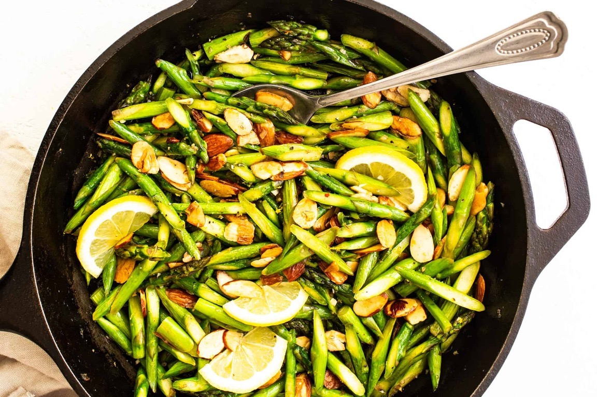

Asparagus Almondine

This asparagus almondine recipe is easy to make in 15 minutes and pairs well as a versatile side dish with a wide variety of entrees.
Ingredients
To make this recipe you will need:
- Asparagus
- Almonds
- Shallot
- Garlic
- Butter
- Lemon
- Salt and pepper
How to make it
Instructions:
- Toast the almonds.Melt the butter in a large pan. Add the almonds and sauté for about 3 minutes, stirring and flipping occasionally. Use a slotted spoon to transfer the almonds to a plate.
- Sauté the asparagus.Add the shallots to the hot butter and sauté for 1 minute. Add the asparagus, garlic and lemon zest. Sauté for 2-3 minutes, until the asparagus reaches your desired level of tenderness.
- Season.Add the lemon juice and half of the almonds and toss to combine. Season with salt and pepper to taste.
- Serve.Serve warm, garnished with the remaining almonds and an extra twist of black pepper.